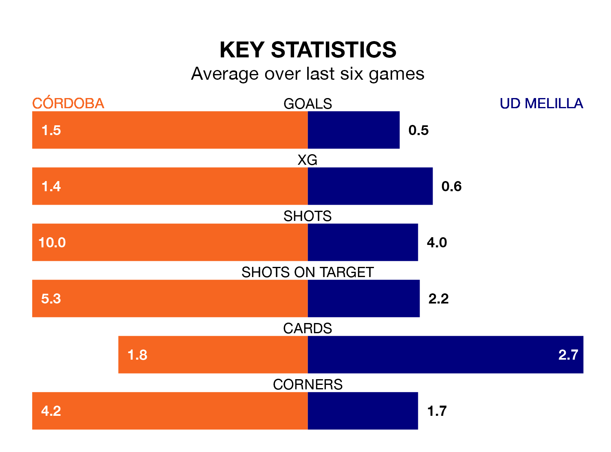

Mid-season relegation candidates UD Melilla face a challenge away against high-flying Córdoba at the Estadio Nuevo Arcángel on Sunday.
UD Melilla are 19th in the Primera Division RFEF Group 2 table, and have picked up five wins and four draws in their 24 games to date.
Córdoba, meanwhile, are third in the standings with 45 points, having won 13 and drawn six, and are nine points behind table-toppers CD Castellón.
With 13 goals in 24 games so far this season, Melilla are the league's second-lowest scorers with 0.5 goals per game. And they are conceding more than average, letting in 32 goals at a rate of 1.3 per game.
Córdoba, meanwhile, are above average scorers, with 1.7 goals per game, compared to a league average of 1.1. They have conceded 0.9 goals per game.
In Carlos Marín Tomás, the hosts can rely on one of the league's safest pair of hands. He has kept 10 clean sheets in his 21 appearances this season, and only one other 'keeper – Recreativo de Huelva's Rubén Ramos González – has been able to prevent the opposition scoring on more occasions in Primera Division RFEF Group 2.
In the away side's net, Javier Montoya Monente has seven clean sheets in 17 games. He has conceded a goal every 101 minutes, 30% more often than the 135 minutes between goals for Marín Tomás.
Córdoba are in reasonable form in Primera Division RFEF Group 2, with three wins and three draws from their last six games.
With two wins and a draw over that period, Melilla's form is worse – they have taken seven points from 18, compared to Córdoba's 12.
Córdoba's last match was on February 18, a 1-1 draw against Ceuta, with Adrián Lapeña Ruiz getting the goal for Córdoba.
Melilla lost 2-0 against CD Alcoyano last time out, also on February 18.
Updated: 10:08 (UTC), 23/02/24